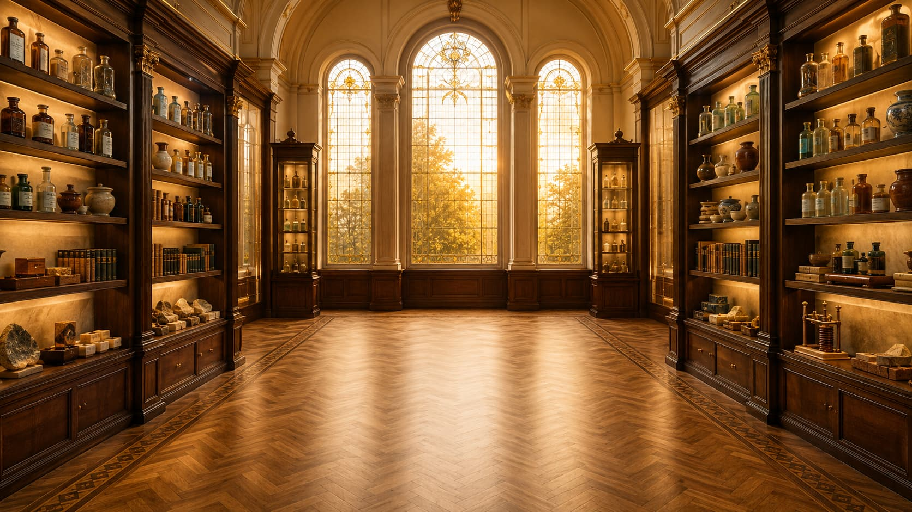

Funções Inorgânicas no Dia a Dia
Reconheça ácidos, bases, sais e óxidos em situações do cotidiano.

Professora Rafaela
Vamos começar.

Assista à aulaEstudo concluído
Reconheça ácidos, bases, sais e óxidos em situações do cotidiano.

Assista à aula